喜欢爬山. Pandemic 的时候经常去爬 appalachian trail（AT). 渐渐喜欢这种运动，那种攀登的艰难，那种会当一览的成就感， 和那种爬完后的喜悦，让人回味无穷。Hiker's high.
爬山 bucket list 里一个选项就是 Mount Whitney, highest point of lower 48 states. 去年就下决心试一下。 爬 Mt.Whitney 要抽签。二月一号到三月一号网上申请。三月十五号通知结果。如果抽中，要在四月二十一号以前确认。 我把 receatiation.gov 的邮件当垃圾邮件，差点耽误了。八月底。没有雪，不太冷，也不太热。(完美.动图)。
有两种 permit。 一种是两天的，你可以在半山腰住一晚上。这个是最popular的。每天有一百人的名额。非常抢手。 另一个是 dayhike. 就是一天往返. 也是每天一百个名额。整个路程21.2迈。攀升6000英尺。最高14505英尺。 跑过马拉松，爬过rim2rim让我信心满满。老骥伏枥，志在万尺。虽然年过半百，有运动型哮喘， 又在五月爬rim2rim的时候得了 Plantar Fasciitis, 床上躺了一个多月。还是觉得自己人五人六的没问题(得瑟.动图）
装模作样的爬了两次AT,跑了一次半马，就算是训练了。万事具备，只等日子。
得意洋洋的在校友群宣布要爬山了。生怕别人不知道。好心的同学私信我：xx 爬过，你要不要问问。好多人有高原反应。 同学好细心。她群里公开问，就像在怀疑我的能力。同学真是太好了。重度拖延症的我哼哼哈哈的答应。直到要出发了才想起做功课。 觉得来不及了。干脆上网吧。好歹查查人家是怎么成功的。 我礼拜一的飞机。礼拜天一查，好多人刚爬的抱怨风大，天冷。啊...这...是整哪一出，不是风和日丽吗。 在棉袄和运动型内衣之间犹豫半天，选了后者。证明我太聪明了。因为根本不需要。选前者除了背包重一两磅啥用也没有。 加州那个周末来了场寒流。下雪了都。
要说我啥功课都没做，肯定是撒谎。我还是挺害怕高原反应的。 爬山前和一个医生喝啤酒，告诉我一种药可以缓解高原反应症状。一查文献，竟然是真的。很多文献报道。找家庭医生，开了药，信心大增。 要飞到拉斯维加斯，还要带着这种药。想想损友牛魔那种坏笑，我不禁也笑了。 啥，你说要我请你吃饭不然就泄露出去？切，哥们儿我会在乎这个。你敢发出去我就敢点赞。我还发现了一种便携式吸氧仪。 是给老人准备的。也买了一个。双保险了。（自信.动图）
基友老吴说爬Whitney要把所有固体废物带下山。啥？一查，还包括排泄物？我擦。而且要求食物放在防熊罐里。没明白为啥。 我如果爬山遇到熊，熊会当着我的面，翻包里面的食物吗？成精了它。我买了一个。巨重。带着这个爬山得累死。 到了地方一问，这个是如果你要过夜就需要。dayhiking不需要。就说嘛。美国人数学差是真的，人家不傻也是真的。
要出发前的晚上，媳妇问我，你这次还和上次的同学一起爬吗？我还是挺希望和老吴小南一起爬的。 这次就我一人。Bo Solo, 小南给我起的外号。Bo Maverick 不好吗（得意的笑.动图）
飞机飞到拉斯维加斯，租车，开到旅馆，Luxor. Weekday 脸红价格。如果住旅馆，停车打折，刷门卡出入，可不限次数。 睡到大半夜，火警响了！响了十分钟终于停了。太没人性了。差评！退钱！
早上七点出门。先去人民的选择 walmart 买了 Trek Pole,香蕉，煮鸡蛋，水，沙拉，chicken wrap. 去chick-fil-a买了三盒strips. 去 Mt.whitney 要穿过死亡谷国家公园。室外温度102F.景观非常壮观。 其实死亡谷非常漂亮。我认为是美国前五的公园。出了公园，正对着 Mt.Whitney. 太壮观了。
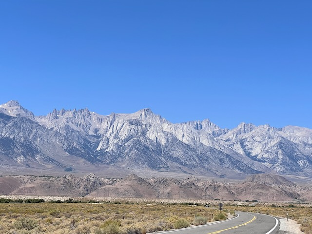按计划先去 Eastern Sierra Visitor Center.就在Long Pine镇外。因为要他们在permit上签字。然后去 Mt.Whitney trail Portal,就是hike 出发的地方。海拔8000尺。一是看看从哪出发，二是看看停车地方之类的。本来有一条路可以直接到 portal 的。但关了。所以要绕路。七拐八拐的。路上有一个 Alabama Hills National Scenic Area. 非常漂亮。有个 Mobius Arch. 从Arch里可以看到 Mt.Whitney。非常推荐。
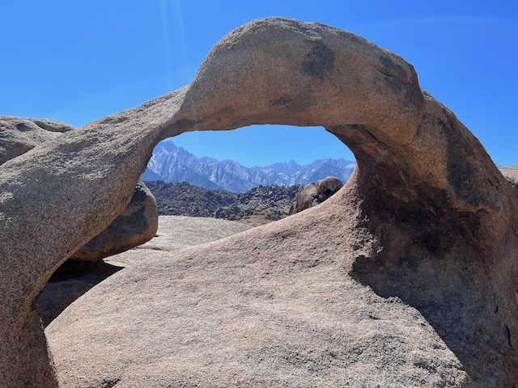早早的回了旅馆。准备好第二天的背包。躺下。前一夜没睡好。觉得这晚上一定要睡好点。结果空调的声音就跟拖拉机一样。折腾到快半夜终于睡着了。也不算睡着了。半梦半醒的。
觉得可能也睡不着了。因为闹钟定的2:30am. 起床，冲澡，吃东西，出门。
到了Portal。停车。上了一趟厕所。谢天谢地。大概率不用带着"固体垃圾“爬上爬下了。想想就觉得酸爽。先喝了一大瓶水，加上两片善存。在trailhead 称背包，重量25磅。都（二声）是必需品。
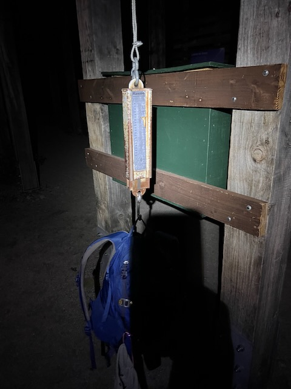出发。我在给背包称重的时候，一个非常瘦的小伙子，拄着一个很长的pole,用一种缓慢的速度从我身边走过。我还以为这哥们是个病人。结果人家才是爬山的行家。这种高海拔的爬山，开始就是要缓慢的速度，适应环境。我太菜了。竟然，超过了他。小伙子很有礼貌，向我点点头。（这哥们不到一个mile就超过了我，还是那种缓慢的，让人绝望的速度。然后，人影都不见了）老汉哭昏在地上，因为，我开始感觉到高原反应了。怎么说呢，就是你看着坡度不高，就是怎么走都走不快。迈不开步子。周围黑漆漆的。只能看到头灯前面的一块地方。可以听到水声。抬头看天，皎洁的月光。很多星星。看不到银河。可能月亮太亮了。我沿着山路尽我所能的爬着。开始的时候感觉呼吸困难。挺正常的。跑步的时候刚开始也一样。慢慢有点儿适应了。走过一条小河。幸亏穿了防水靴。不禁为自己的准备暗暗得意。就这。切。
*我特意选了一个boot。因为看油管，要过几条小河。虽然没有rock plate，但防水。以后我为我的决定后悔死了。
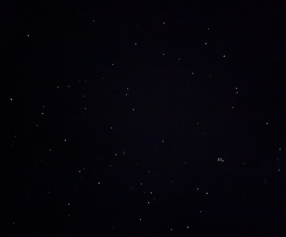一个小时的攀爬，觉得还好。有点适应爬坡了。喝了半瓶水。休息了一下。环顾四周，还是黑漆漆的。本来以为可以看到一起爬山的人。那点点的头灯。可惜什么也没有。刚开始1mile的时候，碰到了一个女生。她气喘吁吁笑着问我，“are we there yet". 我也笑了。“I wish". 她也笑了。看不清面貌。可以想象她的疲惫。很多人几千尺就有高原反应了。
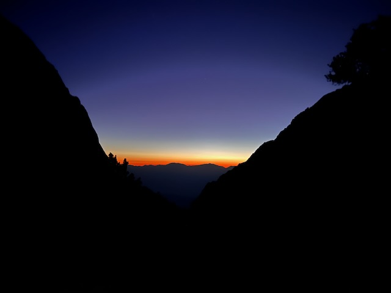*我在攀升和回程都没有再看到她。可能放弃了。
走过了几个木头桥。走的轻巧。我自己都能想象自己得意的样子。路过几个瀑布（听声音）和第一个湖（看地图脑补）。 走过一片松林。这里有一个campsite.(outpost). 遇到一个亚裔。看起来略显迷茫。可能是在这里camp的人起来跑夜。回头看天，远远的看到天边已经开始亮了。我告诉自己，爬快一点，高一点，看看日出。（我都不知道我哪来的自信）
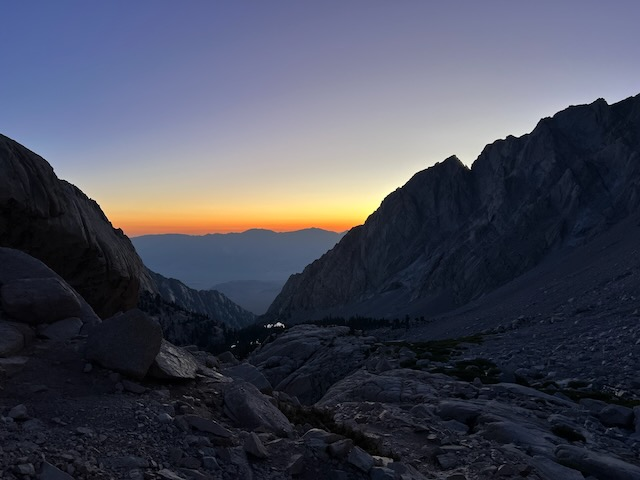 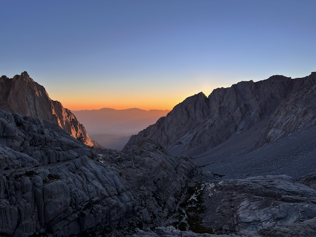太阳慢慢的升起了，回头看，靠南的山完美的挡住了日出，可以看到远处死亡谷被慢慢的点亮。太美了。如果能看到太阳，就完美了。或者更完美了。 因为我觉得，已经很美了。不虚此行。周围的山也慢慢亮了起来。我不禁频频回头。欣赏着美景。然后，我迷路了。从4 miles开始，石头代替了沙土。我的鞋因为没有太多的保护，脚掌开始生疼。我勒个去，跟我们AT trail同款。我总抱怨我们滨州山上石头太多。到了着才知道我们那就是过家家。不是那种大石头，也不是碎石，是那种不大不小，砖头大小的石头。踩在上面，一要找好角度，还要保持身体和脚的平衡。怕扭伤了。而且，爬山的路缺乏明确的路标，我走错了好几次。多亏看一个爬山软件(alltrails)才回来的。慢慢的看到trail旁的小河，小瀑布，和刚才路过的湖。觉得自己的脚踝特别累。看运动表，心跳一直在130-140之间徘徊。还好。庆幸没有早早的出现高原反应。有点饿了。讲真的。
 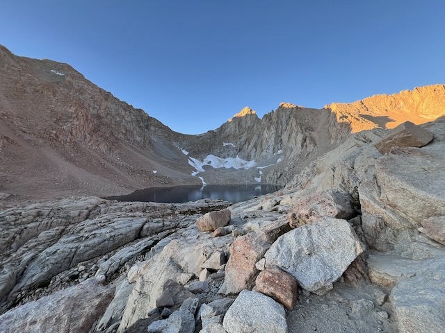
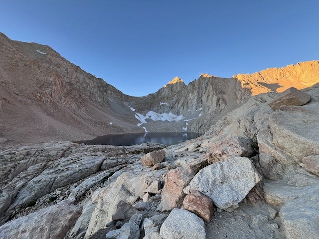
太阳逐渐升起，前面的mt whitney 已经由金黄变成青色。后面的死亡谷，已经完全亮了。温度还好，不冷不热。我继续在迷路找路的线路上挣扎。还好天亮了。我走到了2 days permit里的camp site.很多帐篷。两个湖之间。湖水是那种分层次的蓝色。蓝绿色。非常漂亮。我在湖边找到了一块比较平整的石头，喝水，吃东西。旁边有的山谷里还要没有化的雪。远远的还可以看到刚才路过的几个湖。太漂亮了。能在这里住一晚真的是非常棒。我整体感觉还好。觉得怎么都爬不快，但也没有特别多别的反应。
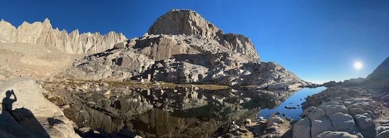开始爬著名的 99 switch-back。我戏称99疼死(turns)。是疼。太阳完全从山里生起。有时候别瞎憧憬美景。太阳升起来特别晒。觉得特别热，照在皮肤上生疼。晒着后背。我本来觉得会穿长衣长裤。高原上早上的太阳特别毒。而且，我没有带防晒霜。（哭死了）。爬99疼的时候，觉得怎么走都走不完。看着前面的人，觉得很近，其实要走好久才到人家的地方。都是石头路。感觉自己是条拉磨的驴。汗水湿透了长衣。只好脱了。是个让我后悔到呲牙的举动。帽子戴不住，只好脱了。喝水，爬山，休息，走几个疼，接着喝水，休息。走的疼越来越少，休息的时间越来越长。心跳也开始越来越猛。感觉自己都可以用耳朵听到了。鼻窦疼的要命。感觉有压力在从里到外压着鼻腔。抬头看 Whitney 山，远远的，又像近在咫尺，雄伟，壮观。心中猛的告诉自己，爬! 为有牺牲多壮志，敢教日月换新天。
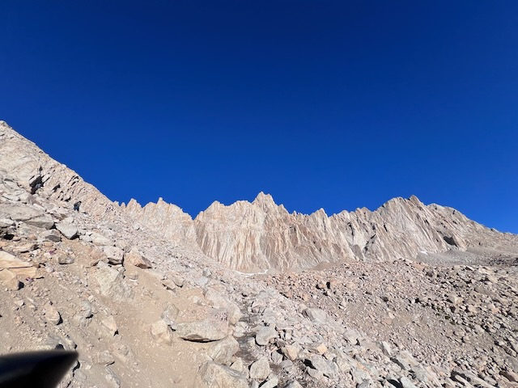99.9.9.9.9.9... 疼死。爬不完的疼。前面的人觉得近在咫尺，又如远在天边。走到人家的地方觉得要很长时间。太阳火辣辣的晒着。走过的地方还有很多结冰的地方。也有冰化了以后流下来的溪水。有个guard rail.拉着攀爬着。到了13k不一会儿,终于感到了著名的高原反应。心跳猛烈，伴随着头内部阵阵的撞击，是颅压升高。鼻腔也觉得好像有东西向外推着。觉得非常疼。摸着背包里的神药，和氧气机，觉得可能还不到时候。再等等。（喝水，休息，爬）乘以n。看手表，心跳130-140.不是特别快。就是觉得跳的自己难受。觉得是表坏了。
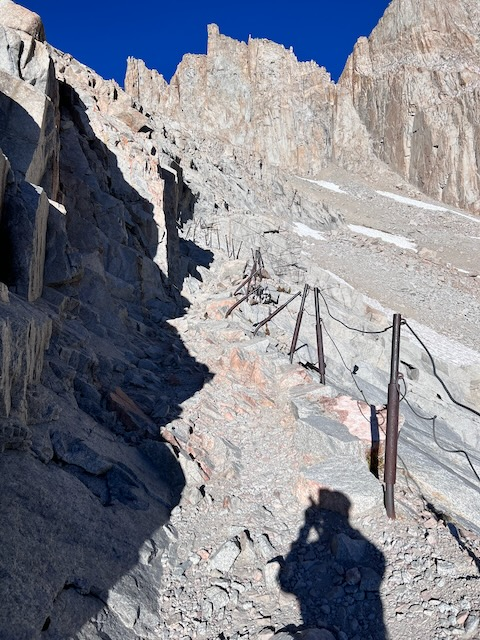爬到了一个山口。是John Muir Trail （JMT） 和 Mt. Whitney Trail 交际的地方。是一个平台一样的地方。看着山下的美景，不禁发出一声惊叹，太美了。Sequoia 的美景尽收眼底。湖边，远山，森林，太美了。蓝天下感觉这地方真是美国最美的地方。我感觉高原反应更剧烈了。没走多远就要休息一会儿。碰到了几群年轻的爬山的人。有的是爬（JMT）的，有的是爬High Sierra的。有个女生在那里用沙子埋着自己的呕吐物。另一个男生在对面站着。他说自己受伤了。我还以为他是扭伤了。原来是自己爬的太快，吐了。
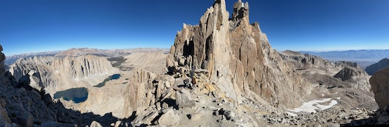这是一段莫名其妙的路。在海拔13k+,先大下坡，再大上坡。然后上坡攀岩。都是石头路。在石头上走，基本只能走一个人。我很森气。美国人设计路的时候不考虑用户体验吗？啥路啊这是。难怪工业产品开始被日本人压着打，现在干不过天朝。切。走路的时候，有几个山梁的缺口，可以看山下。山下的湖，雪，草甸。很漂亮。我可能无心欣赏。剧烈的高原反应让我特别难受。觉得反胃。休息一会又觉得不会吐。脚下的石头隔的我的脚特别疼。觉得每走一步都要付出极大的代价。碰到一个驴友。是个纽约人。她本来准备爬high sierra 的。但Sequoia 着火，她的permit 被取消了。只好改爬whitney. 今天还是她生日。我们一边聊天一边互相鼓励。可能是聊天的作用吧，我感觉高原反应没那么强烈了。也可能是我适应了。我们就这么一边聊天一边爬。远远的看到山顶，奋力的前行。
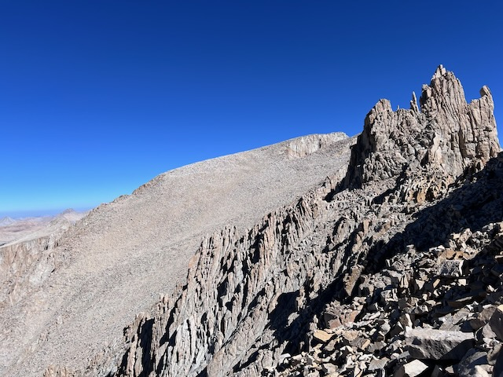终于爬到山顶了！著名的小屋。站在地标上环顾群山。举着14505 mt whitney的牌子照相。在log上写下大名。说再多的话都是多余，一个字，值！曾经的高原反应一扫而光。坐下来，休息。说实话登顶时间超出了我的预期。整整九个小时。如果要在天黑之前下山，就得马上走了。我和刚才的驴友告别。留给她一瓶水。她准备下山的时候用filter喝河水。我怕她坚持不到河水的地方。还很远呢。走的时候一回头，发现她已经把我给她的水喝了一半了。签名的时候，遇到路上遇到的一对母女。好像是欧洲人。我签的名字歪歪扭扭的。我都不好意思了。自嘲我的字是小时候没好好学。站在旁边的女生说，没事，现在都用电子产品，很多年轻人在学校根本不怎么手写。我说，老汉我念书的时候，老师其实是要求书写工整的。可是我是个坏学生。
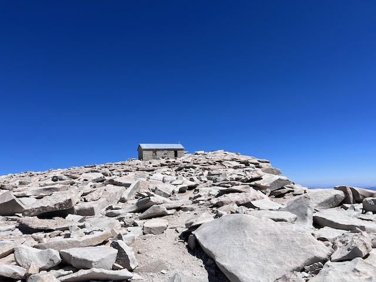 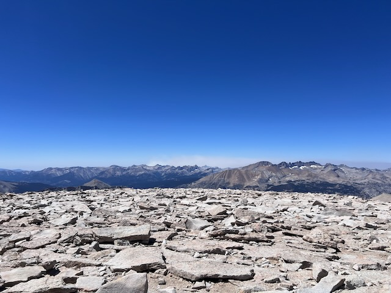 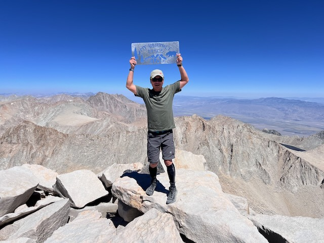 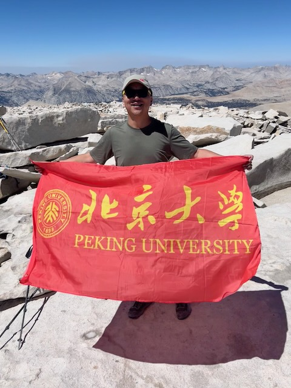爬着13K, 号称美国最高的pass。觉得高原反应又来了。尤其在爬坡的时候。就是那个大上坡大下坡。走的时候，还听到了一声响雷。吓死了。高山上避雷就是靠运气。没什么地方可以躲藏。而且，我，还摔了一跤。莫名其妙的。路上有一块石头，石头上有沙子碎石。下坡的时候，由于用力角度，失去了平衡。右边是一个悬崖，不是很高，但足够高了。我本来想平衡一下不倒下的。但是，背包里的水由于惯性，拉着我倒了下去。不过倒的有一个角度。万幸，向左。膝盖磕在了石头上。倒下的时候觉得完了，如果骨折就得坐直升机或者驴了。万幸由于角度，只擦伤了皮。流了血。
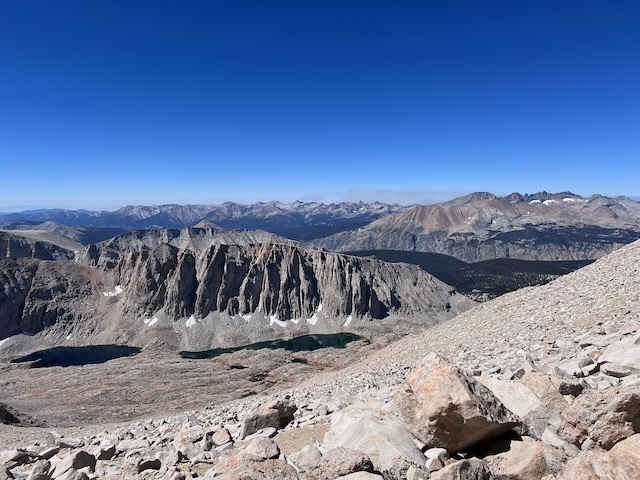到了山口。刚才的攀岩让我体力尽失。精疲力尽。觉得自己奋力挣扎，就为了多走一点距离。山口的人不多。大家互相道别鼓励。遇到两对夫妻。我们结伴而行。还碰到一对夫妻，六七十岁，在山上跑步。完全看不出违和劳累。想起我前老板在我练习马拉松的时候告诉我，总有人比你跑得快。超过你，嘲笑你跑得慢。你自己跑自己的就好了。得确，人生而平等，又不平等。做好自己就好了。
99疼。疼啊疼。这怎么疼没完了。觉得永远也走不完了。自己走了很久，就是没走多远。两个腿虚弱无力。自己拌蒜，又摔了一跤。这次书包里的水给我助力了一个180度。躺在了石缝里。刚才凝结的伤口沾上了很多沙子。膝盖伤口上面有多了一片伤口。而且胳膊肘也划伤了。挣扎着要爬起来。却怎么也爬不起来。把书包卸下才爬起来。其实就是没劲了。无力爬起来。磨磨蹭蹭，往山下移动。疼啊疼。
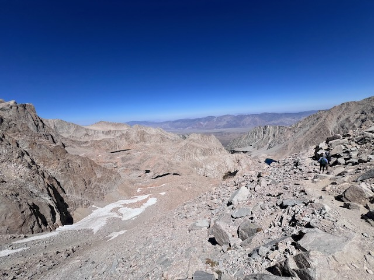终于到了campsite。休息一会儿。接着走。很多 overnight camper 在收拾帐篷。有新的人过来。看看天上的太阳和前面的距离，挣扎着站起来。下定决心，我一定要在天黑之前赶到停车场。
在石头上摸索道路。两个脚在石头上演着杂技。感觉燥热。不断的喝水。下山时的三升水越来越少却感觉不到背包轻下来。皮肤感觉到灼烧感了。高原上太阳足。感觉肯定sun burn了。路过outpost campsite。一个老哥在河边照相。看到我，笑着说“You did it. Congradulations". 我也连声道谢。outpost campsite 很漂亮。很大的一块平地。有树林。有河水穿过。 真的是一个好地方。
终于踩上了细沙和土路。速度也开始快了。感觉没有那么累了。就是迈不开腿。大角度的下坡。远远的看到了上山的盘山路。希望就在前面。
终于到了停车场。我完成了这次挑战。称了一下书包，15磅。食物和水的重量。如释重负。坐在石头上。喝了几瓶水。干渴的感觉好多了。又洗了洗伤口。休整了半个小时。天已经开始暗下来了。慢慢的开出停车场，向旅馆驶去。
去了人民的选择。买了双氧水，棉签，创可贴，一些吃的。回旅馆，清洗伤口，包扎，洗了一个澡。再清洗包扎。草草吃了点东西。躺在床上。不是很累。好像山上的累很大一部分是elavation 造成的。莫名其妙的，浑身发冷。可能消耗太大。照镜子，折腾一天，竟然出了几块腹肌。多了几分彪悍。得意。
这真的是一场毅力和体力的攀登。而且多少有些运气。科学的方法，是从8000 feet，每天增加1000feet. 绝大多数人在10000feet开始有反应。还好，我是从13K开始的。虽然觉得难受，但在我承受的范围之内。没有借助任何其他的辅助。回来以后，疲乏，嗜睡。休息了三天。慢慢好了。但有备无患。我觉得我最大的失误就在于，没有涂抹防晒霜。然后没有穿比较techy 的hiking boots。在高点的时候，和人聊天极大的缓解了我的症状。